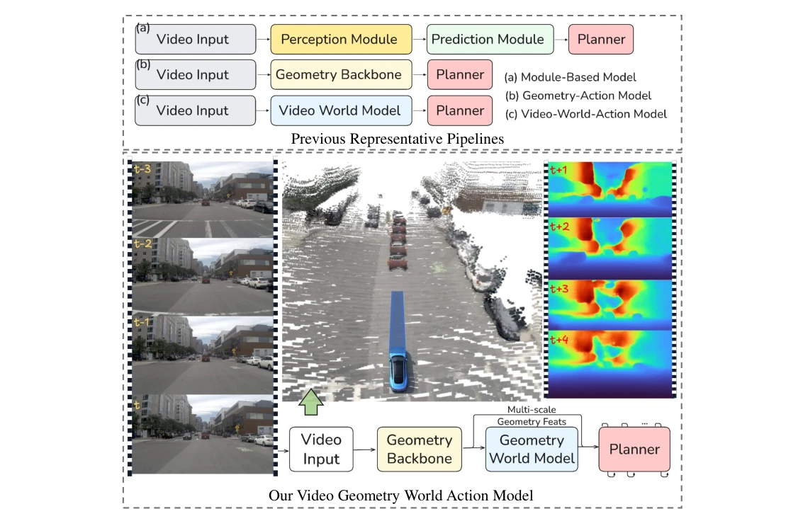
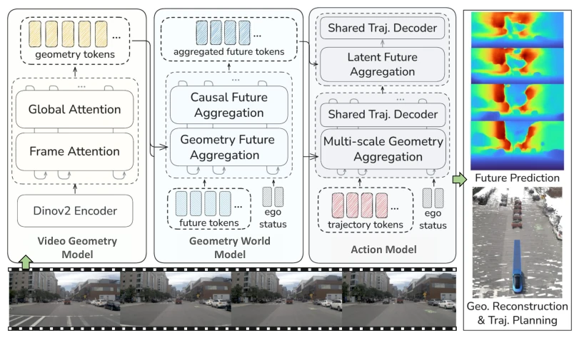
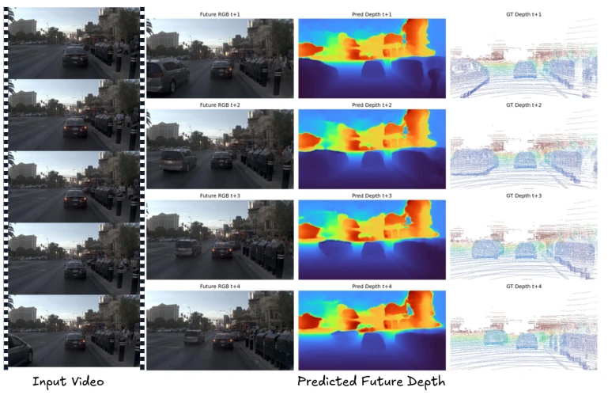
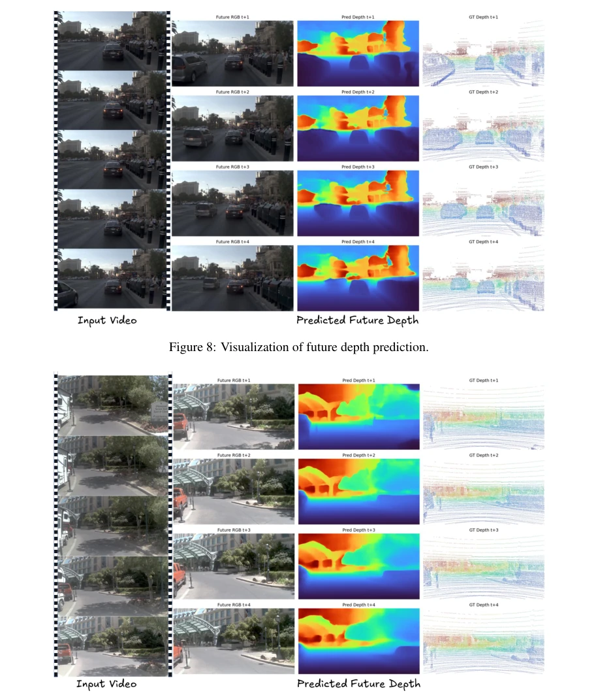
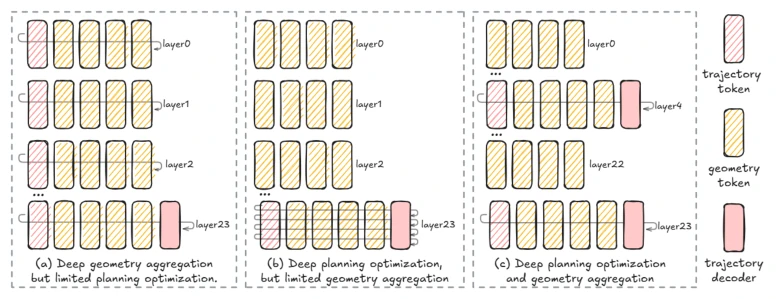
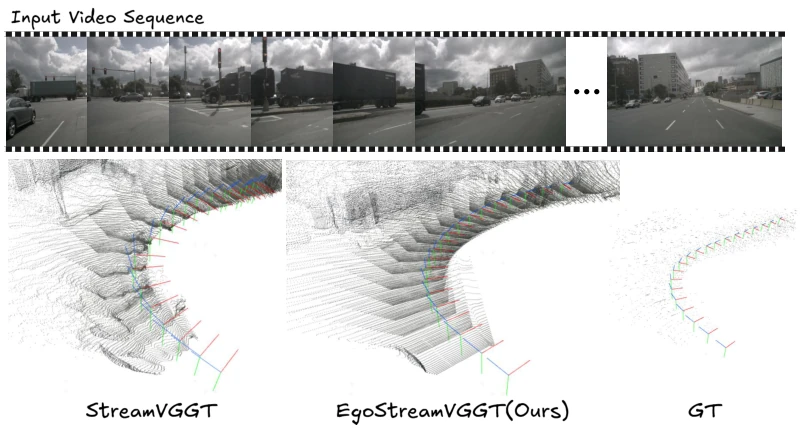
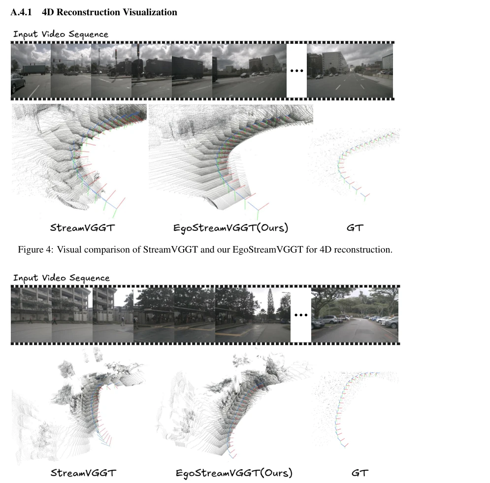
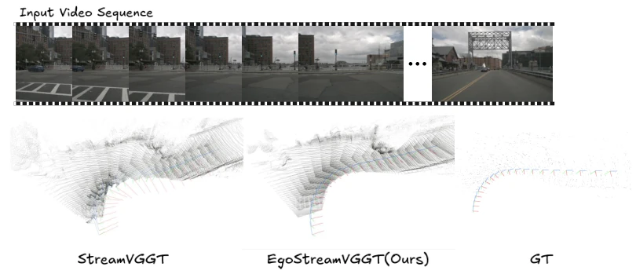
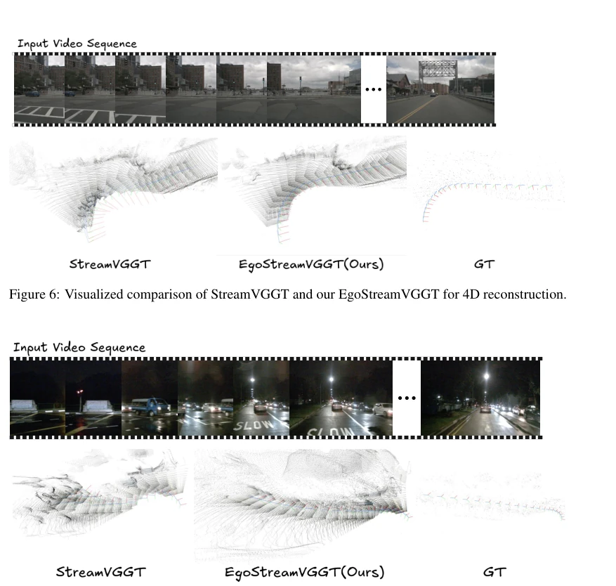

This paper applies a "geometric world model" filter to autonomous driving planning, attempting to solve the problem of end-to-end models lacking explicit 3D geometric constraints. Although it sounds impressive, the essence remains explicitly integrating 3D geometry into end-to-end planning and introducing future geometry prediction. The highlight lies in the correction of the "ego-aligned" coordinate system, which resolves the longstanding issue of mismatch between traditional streaming reconstruction and vehicle motion, making geometric features better aligned with the ego-vehicle perspective. However, the so-called "future geometry" is still based on depth prediction, far from true physical world simulation; do not expect it to predict the future like a sci-fi movie. The experimental data is indeed impressive, achieving top results on NAVSIM, but whether inference can truly be processed in a streaming manner remains questionable, given that the authors themselves admitted the clip limitation. Overall, this is a pragmatic work finding a balance between geometric perception and planning, but the "world model" label is slightly overstated; the core is still iterative optimization of geometric features, effectively adding a pair of "geometric glasses" to VLA.
Existing end-to-end driving models (such as VAD [1], UniAD [2]), although powerful, often lack explicit 3D geometric constraints, causing planning to easily become "drifting" and making it difficult to balance safety and efficiency. Previous geometric planners (such as DVGT-2 [19]) use only single-layer geometric features, failing to grasp multi-scale spatial cues and unable to simultaneously capture obstacle boundaries and scene structure. Meanwhile, video generation-based world models (such as Epona [20], DriveVLA-W0 [22]) mostly predict the future in pixels or appearance latent spaces; RGB representations are redundant with limited geometric guidance and cannot directly support trajectory generation. This results in planning that is either too conservative or lacks spatial consistency in dynamic scenes. Therefore, how to explicitly utilize present and future geometric information to guide planning has become a key challenge in improving autonomous driving efficiency and safety.

Figure 1: An intuitive comparison between our video geometry world action model and previous representative pipelines. Given a consecutive video input, our GeoWorldAD provides progressively optimized trajectory planning based on the present and future geometry guidance.
GeoWorldAD comprises three core modules: the Video Geometric Model, the Geometric World Model, and the Geometric Action Model. First, the Video Geometric Model is improved from StreamVGGT [23] to EgoStreamVGGT to extract multi-scale geometric tokens; the key lies in aligning the reconstruction coordinate system to the ego-vehicle (ego-aligned) to avoid errors introduced by fixed reference frames. Second, the Geometric World Model employs a Q-Former structure, combining ego-vehicle state to predict latent future geometric tokens, with the supervision signal being the future depth map to ensure the predicted geometric evolution conforms to physical laws. Finally, the Action Model iteratively refines trajectories by first aggregating present multi-scale geometry and then fusing future geometric tokens to generate and score trajectories. Training is conducted in three stages: pre-training the geometric model, training the planner, and finally jointly optimizing to incorporate future geometry. The loss functions include reconstruction loss, world model loss, and trajectory loss, ensuring consistency between geometry and action.

Figure 2: Overview of the GeoWorldAD framework. Given an input video sequence, GeoWorldAD integrates a video geometry model, a geometry world model, and a geometry-oriented action model for 4D scene reconstruction, future depth estimation, and trajectory planning, respectively. GeoWorldAD grounds trajectory planning in ego-aligned present geometry and latent future geometry, providing both current spatial constraints and future-aware guidance. The decoders of the video geometry and geometry world models are omitted for clarity.
Evaluated on NAVSIM v1 and v2, metrics include PDMS/EPDMS, Safety (NC/TTC), and Efficiency (EP). Compared to DVGT-2 [19] and EponaV2 [31], GeoWorldAD shows significant improvement in the EP metric (v1 improved by 1.6 points) while maintaining safety. Ablation studies demonstrate that introducing future geometric tokens significantly improves ego-vehicle progress, whereas relying solely on present spatiotemporal geometry appears slightly conservative. Geometric reconstruction accuracy on datasets such as OpenScene also validates the effectiveness of EgoStreamVGGT. Furthermore, Ego-aligned representations improve planning performance more than fixed frame representations. Overall, explicit geometric grounding and future geometry anticipation indeed deliver SOTA performance, particularly in complex dynamic scenes.

Figure 8: Visualization of future depth prediction.

Figure 9: Visualization of future depth prediction.
其他图片Other Figures

Figure 3: Comparison of three different geometry aggregation strategies for trajectory planning.

Figure 4: Visual comparison of StreamVGGT and our EgoStreamVGGT for 4D reconstruction.

Figure 5: Visualized comparison of StreamVGGT and our EgoStreamVGGT for 4D reconstruction.

Figure 6: Visualized comparison of StreamVGGT and our EgoStreamVGGT for 4D reconstruction.

Figure 7: Visualized comparison of StreamVGGT and our EgoStreamVGGT for 4D reconstruction.